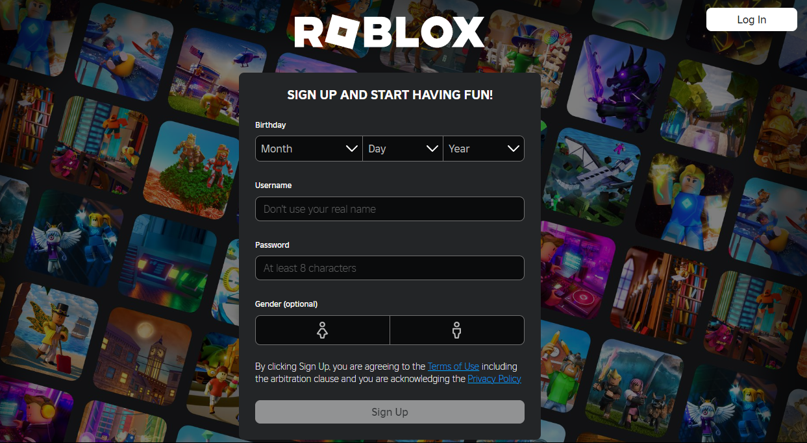
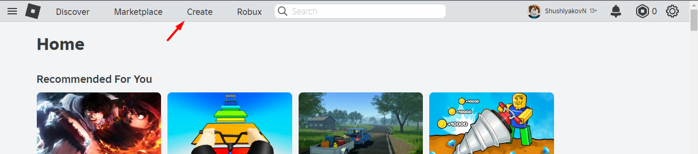
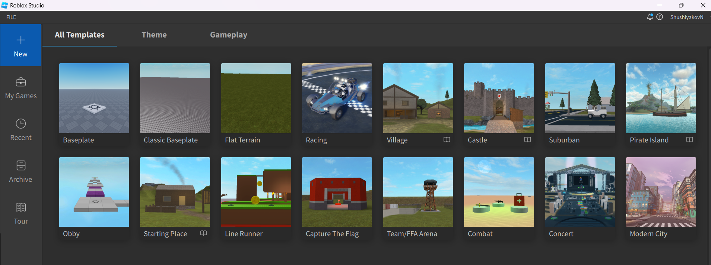
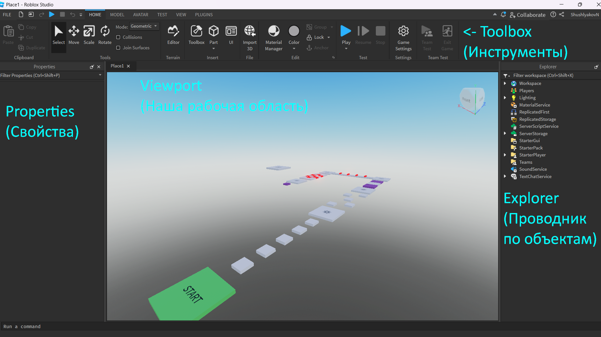
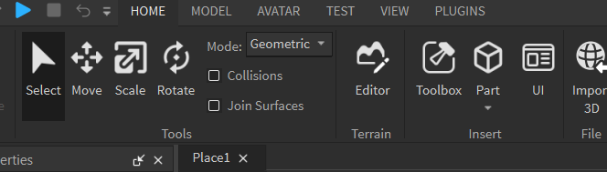
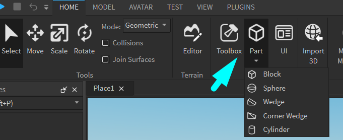
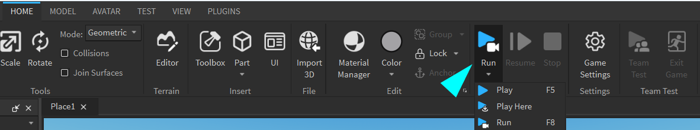
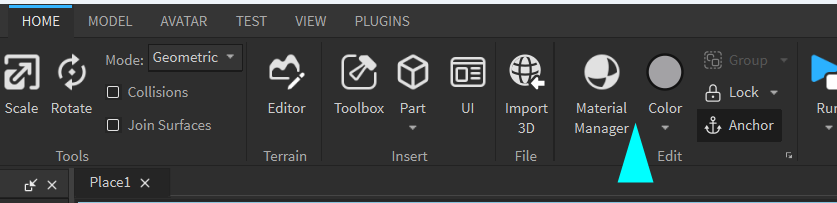

Создание игр в Roblox Studio
Знакомство с Roblox. Создание первой игры!
Сегодня мы начинаем знакомство с программой для создания игр - Roblox Studio!
Что такое Roblox Studio?
Roblox Studio — это собственный движок Roblox, разрабатываемый и поддерживаемый Roblox Corporation, позволяющий каждому пользователю создавать и опубликовывать игры любых жанров в неограниченном количестве, но исключительно на самой платформе.
На 30 июня 2022 года более 12 млн пользователей Roblox создали минимум один опыт на Roblox Studio.
Игровой движок?
Игровой движок — это набор инструментов, с помощью которых разработчики игр создают графику и звук, обеспечивают перемещение персонажей, генерируют физические эффекты и графические сцены. Игоровой движок позволяет разработчикам воплощать свои фантазии в реальность, сосредоточившись на идее, а не на технических деталях. То есть новым разработчикам не надо ломать голову над созданием какой-то базовой задачи, она уже будет воплощена в движке.
Регистрация в Roblox
Чтобы работать в Roblox Studio, нам необходимо зарегистрироваться в Roblox. Перейдем по ссылке Roblox.com
Из-за большого количества пользователей, большинство ников будет занято, поэтому нужно будет пофантазировать либо добавть приставку "coddy_", например "coddy_ProgrammerJohn"
Нужно обязательно записать логин и пароль! Если мы их забудем, то сможем восстановить.
Установка Roblox
После того, как мы попали в учетную запись, нажимаем на Create в шапке странички. Далее большая кнопка Start Creating. Скачиваем Roblox Studio...
После установки значок Roblox Studio должен появиться на рабочем столе. Запускаем его и вводим логин и пароль, который указывали при регистрации.
После входа мы видим окно создания проектов. Roblox по умолчанию нам предлагает уже созданные шаблоны игр для быстрого старта в разработке игры.
Мы начнем знакомство с шаблона Obby (паркур)
Изучаем интерфейс
Для начала расположим окна, закроем лишнее в соответствии со следующей картинкой
- Toolbox - инструменты для работы с нашей игрой. Настройка перемещения, выделения, вращения, цвета, материала и ещё много всего. Важно заметить, что здесь есть несколько вкладок, между которыми можно перемещаться. С каждой вкладкой мы будем разибраться в течение нашего обучения.
- Viewport - самое главное окно. Окно просмотра нашей игры, именно здесь мы будем видеть все наши объекты и эффекты, а также, конечно же, играть!
- Properties - свойства. Окно «Свойства» позволяет просматривать и редактировать значения свойств и атрибуты одного или нескольких выделенных объектов.
- Explorer - проводник. Окно со списком всех объектов в нашей игре.
Управление
- Чтобы управлять камерой нам нужно двигать мышью с зажатой правой кнопкой.
- Чтобы приблизиться или отдалиться используем колесико мыши.
- Чтобы передвигаться используем кнопки W,A,S,D. (Как в играх)
Инструменты работы с объектами
Первый инструмент - Select
Это базовый инструмент, который позволяет выбирать объекты без отображения осей и манипуляторов, в отличие от других инструментов. При помощи Select можно выбрать один из блоков или несколько. Чтобы выбрать несколько надо зажать CTRL и прокликать по нужным блокам. Выбранные блоки подсветятся голубой рамкой.
Второй инструмент - Move
Данный инструмент позволяет двигать выделенные объекты. Когда объект выбран можно увидеть оси направления. Всего осей три: 1 влево - вправо, 2 вниз-вверх, 3 назад-вперед.
Есть два способа перемещения объектов:
- Перемещение при помощи стрелок (строгое перемещение по определенной оси)
- Перемещение за центр (схватить курсором и переместить) - часто перемещает не совсем как хочется, но может быть полезным при соединении элементов вместе
Третий инструмент - Scale
Он позволяет быстро изменять размеры объектов. Перетягивая кружочки(сферы), вы изменяете размеры по одной из осей. Если зажать при этом Ctrl, размер будет изменяться симметрично.
Последний инструмент - Rotate
Он позволяет поворачивать объекты в пространстве вокруг одной из осей. Шаг поворота можно изменить во вкладке Model - Rotate (по умолчанию 45 градусов, можно изменить на 10 или 5)
Создание объектов
Теперь узнаем, как мы можем создать свои собственные объекты. Это делается при помощи кнопки Part (деталь).
Детали создаются ровно в центре экрана, желательно, чтобы перед камерой уже находился какой-нибудь блок, иначе новый появится довольно далеко.
Старт игры!
Чтобы запустить игру, нажмем кнопку Play!
Есть три варианта запуска:
- Play - запустит игру с начала - персонаж появится на спауне (Spawn- место рождения - Start)
- Plat Here - запустит игру с места, на котором находится камера. Режим очень полезен для быстрого тестирования участка уровня.
- Run - запускает игру без игрока. Вы останетесь в режиме "Свободной камеры", но в игре включится гравитация, обработка, скрипты и т.д. Режим полезен для проверки скриптов и просмотра поведения деталей
Заметим, если мы создали какой-нибудь свои объекты, но они упали куда-то вниз.
Это происходит из-за того, что у этих блоков не включен параметр Anchor (Якорь). Остановим игру, включим якорь (Anchor находится около Play) и запустим заново, блок должен зафиксироваться там, где мы его разместили.
Меняем внешний вид деталей
Чтобы изменить внешний вид объекта существует две кнопки - Material и Color:
Первая кнопка (Material) - меняет параметры и общий вид детали, добавляет тестуру (ткань, кирпич, стекло).
Вторая кнопка (Color) - меняет цвет блока.
Дублирование объектов
Во время разработки игр один и тот же объект может часто повторяться, чтобы сэкономить время мы можем воспользоваться дублированием (копированием). Это можно сделать при помощи меню (клик правой кнопкой мыши по блоку -> Dublicate) или при помощи сочитания (Ctrl + D).
Сначала продублированный элемент не будет виден, т.к. он находится ровно в том же месте, где и оригинал, поэтому после дублирования, объект нужно переместить.
Домашкаа 😁
- Сделать продолжение уровня - добавить несколько новых платформ
- Изменить внешний вид платформ
- Продублировать чекпоинт (точку сохранения) на новый участок
- Не забудь сохранить своё творение!))